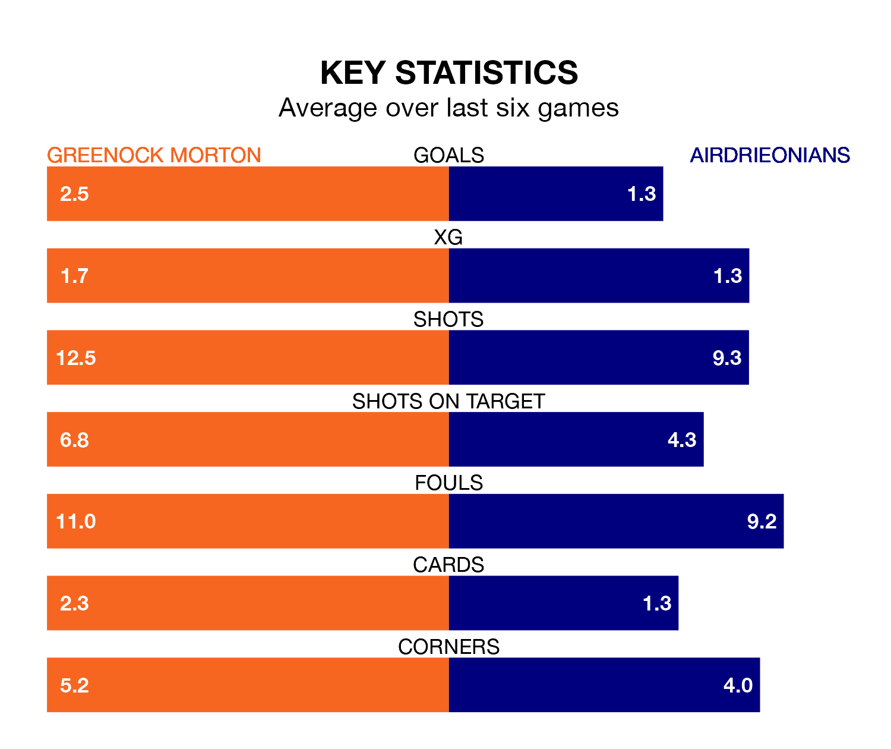

The Championship's two meanest defences go head-to-head at Cappielow Park on Saturday, when Greenock Morton host Airdrieonians.
Only one side – Dundee United – has conceded fewer goals than Greenock Morton to date: the home side have let in just 27 goals in 23 games.
Airdrieonians have conceded the same number of goals in 22 games, giving them the joint-second tightest back line so far this season.
Key to the Ton's home form has been Jamie MacDonald, who has allowed 1.82 goals past him per 90 minutes, compared to 1.1 for Joshua Rae in the opposite net.
In the last 10 years, Greenock Morton and Airdrieonians have played each other on nine occasions. Greenock Morton won four of them, Airdrieonians three, and they drew twice.
On average, the Ton scored 0.9 goals and Airdrieonians 0.6 in those matches.
Their last meeting was on December 23, when they played out a 0-0 draw.
Greenock Morton are in good form in the Championship, with four wins and two draws from their last six games.
With three wins and two draws over that period, Airdrieonians's form is worse – they have taken 11 points from 18, compared to the Ton's 14.
In Robbie Muirhead, the home side have one of the league's most on-form strikers so far this season. He has notched nine goals in 21 appearances, to sit fifth in the scoring charts.
His goal rate of one every 200 minutes is quicker than that of Callum Gallagher, the visitors' top scorer with a goal every 243 minutes, and a total of five goals in 21 games.
Greenock Morton are fourth in the table after 23 games, of which they have won nine and drawn six, earning 33 points.
Airdrieonians are two places behind Greenock Morton in sixth, with eight wins and four draws putting them on 28 points.
Greenock Morton's last match was on February 17, a 0-0 draw against Queen's Park.
Airdrieonians lost 3-2 against Ayr United last time out, also on February 17, with Cameron Ballantyne and Craig Watson on the scoresheet.
Updated: 12:18 (UTC), 19/02/24